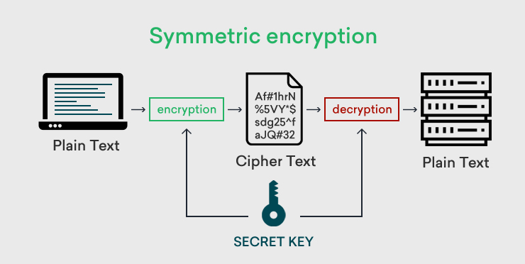

Welcome to the Cryptography Virtual Lab!
Have you ever wanted to send secret messages or ensure your online
information stays secure? Cryptography is the art of protecting
information and is a fundamental part of cybersecurity.
In this virtual lab, you'll embark on a hands-on journey to:
- Understand the core concepts of cryptography.
- Experiment with different encryption techniques.
- Gain practical experience with real-world applications.
Get ready to unlock the secrets of cryptography and become a master
of secure communication!
Welcome to the Cryptography Virtual Lab!
Cryptography is technique of securing information and communications through use of codes so that only those person for whom the information is intended can understand it and process it. Thus preventing unauthorized access to information. The prefix “crypt” means “hidden” and suffix “graphy” means “writing”. In Cryptography the techniques which are use to protect information are obtained from mathematical concepts and a set of rule based calculations known as algorithms to convert messages in ways that make it hard to decode it. These algorithms are used for cryptographic key generation, digital signing, verification to protect data privacy, web browsing on internet and to protect confidential transactions such as credit card and debit card transactions.
Techniques used For Cryptography: In today’s age of computers cryptography is often associated with the process where an ordinary plain text is converted to cipher text which is the text made such that intended receiver of the text can only decode it and hence this process is known as encryption. The process of conversion of cipher text to plain text this is known as decryption.
Features Of Cryptography are as follows:
- Confidentiality: Information can only be accessed by the person for whom it is intended and no other person except him can access it.
- Integrity: Information cannot be modified in storage or transition between sender and intended receiver without any addition to information being detected.
- Non-repudiation: The creator/sender of information cannot deny his intention to send information at later stage.
- Authentication: The identities of sender and receiver are confirmed. As well as destination/origin of information is confirmed.
Types of Cryptography
Types Of Cryptography: In general there are 3 types Of cryptography:
- Symmetric Key Cryptography: It is an encryption system where the sender and receiver of message use a single common key to encrypt and decrypt messages. Symmetric Key Systems are faster and simpler but the problem is that sender and receiver have to somehow exchange key in a secure manner. The most popular symmetric key cryptography system are Data Encryption System(DES) and Advanced Encryption System(AES).
- Asymmetric Key Cryptography: Under this system a pair of keys is used to encrypt and decrypt information. A receiver’s public key is used for encryption and a receiver’s private key is used for decryption. Public key and Private Key are different. Even if the public key is known by everyone the intended receiver can only decode it because he alone know his private key. The most popular asymmetric key cryptography algorithm is RSA algorithm.
- Hash Functions: There is no usage of any key in this algorithm. A hash value with fixed length is calculated as per the plain text which makes it impossible for contents of plain text to be recovered. Many operating systems use hash functions to encrypt passwords.
Symmetric Cryptography
Symmetric cryptography, known also as secret key cryptography, is the use of a single shared secret to share encrypted data between parties. Ciphers in this category are called symmetric because you use the same key to encrypt and to decrypt the data. In simple terms, the sender encrypts data using a password, and the recipient must know that password to access the data.Symmetric encryption is a two-way process. With a block of plaintext and a given key, symmetric ciphers will always produce the same ciphertext. Likewise, using that same key on that block of ciphertext will always produce the original plaintext. Symmetric encryption is useful for protecting data between parties with an established shared key and is also frequently used to store confidential data. For example, ASP.NET uses 3DES to encrypt cookie data for a forms authentication ticket.

Asymmetric Cryptography
Asymmetric cryptography, also known as public key cryptography, is a process that uses a pair of related keys -- one public key and one private key -- to encrypt and decrypt a message and protect it from unauthorized access or use.
A public key is a cryptographic key a person can use to encrypt a message so it can only be decrypted by the intended recipient with their private key. A private key -- also known as a secret key -- is shared only with the key's initiator.
When someone wants to send an encrypted message, they pull the intended recipient's public key from a public directory and use it to encrypt the message before sending it. The recipient of the message can decrypt the message using their related private key. If the sender encrypts the message using their private key, the message can be decrypted only using that sender's public key, thus authenticating the sender. These encryption and decryption processes happen automatically; users do not need to physically lock and unlock the message. Many protocols rely on asymmetric cryptography, including Transport Layer Security (TLS) and Secure Sockets Layer(SSL), which make HTTPS possible. The encryption process is also used in software programs that need to establish a secure connection over an insecurenetwork, such as web browsers, or that need to validate a digital signature. Increased data security is the primary benefit of asymmetric cryptography. It is the most secure encryption processbecause users are never required to reveal or share their private keys, decreasing the chances of a cybercriminaldiscovering a user's private key during transmission.

Simulator
Kindly select the algorithm to simulate: